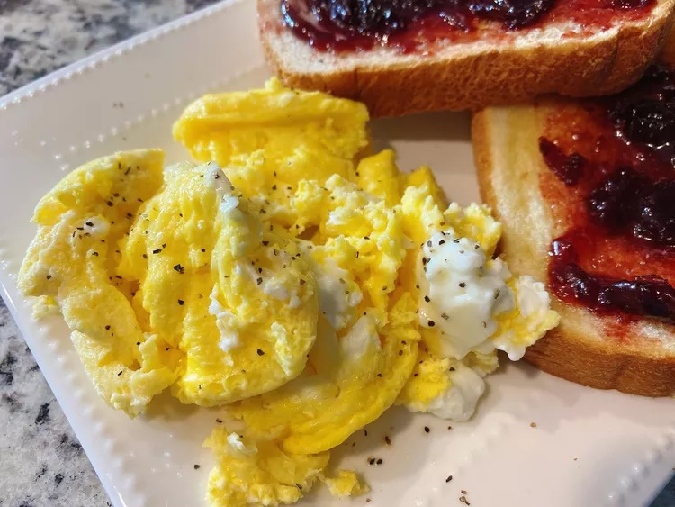

Air Fryer Scrambled Eggs Recipe

Use your air fryer to make scrambled eggs if you don't have a stovetop and
are craving this all American classic for breakfast time.
Ingredients
- 1 tablespoon butter
- 4 large eggs
- salt and freshly ground black pepper to taste
Steps
-
Preheat the air fryer to 300 degrees F (150 degrees C). Place silicone
liner into the air fryer basket and set butter on top.
-
Allow butter to melt, 1 to 2 minutes. Increase heat to 310 degrees F
(154 degrees C).
-
Meanwhile, combine eggs and salt in a bowl and whisk until well
combined. Pour egg mixture into silicone liner.
-
Cook eggs for 2 minutes. Stir the eggs with a spatula and continue
cooking until eggs are set to your liking, 4 to 5 minutes. Sprinkle with
pepper before serving.